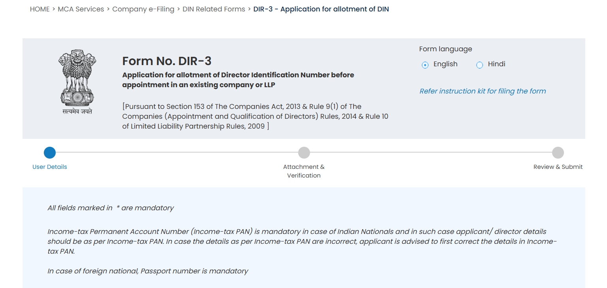
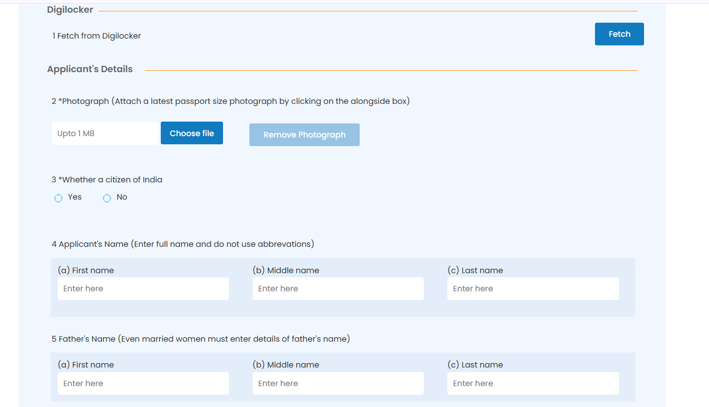
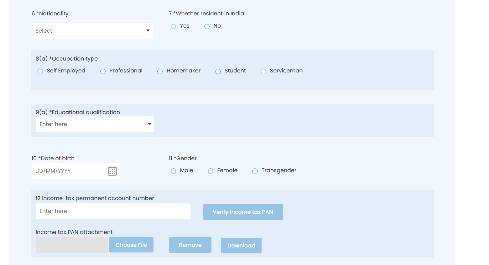
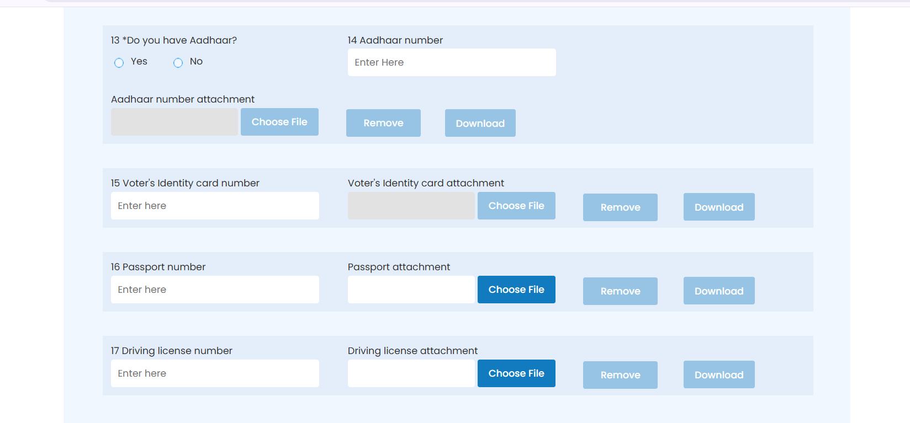
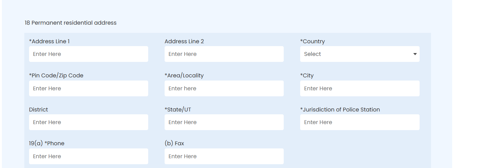
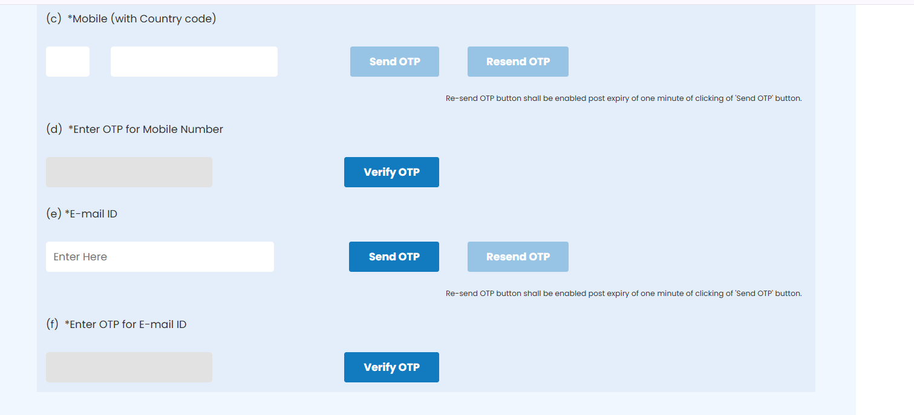
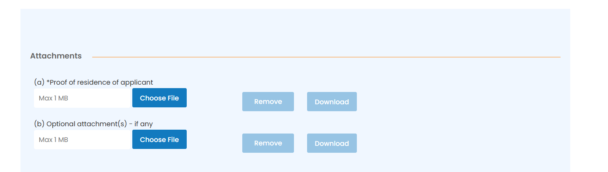
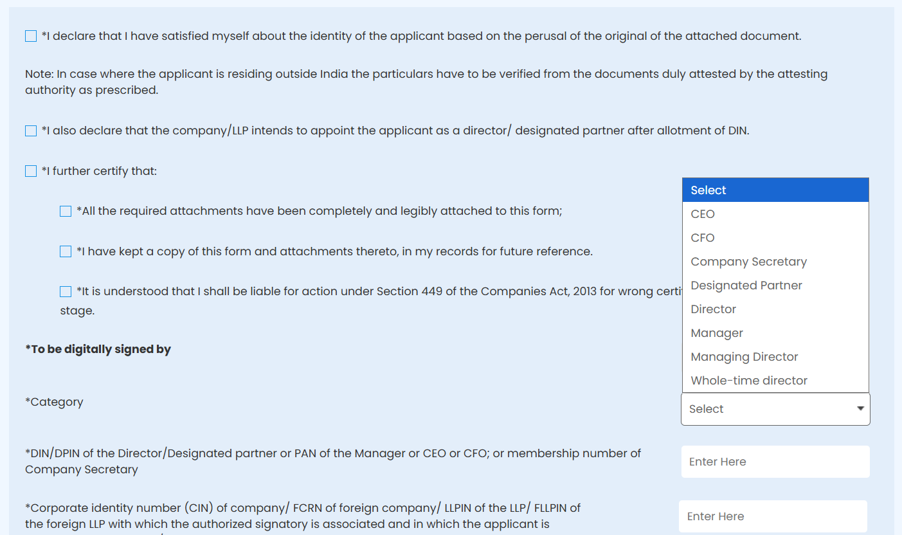

How to Get DIN Online in India - Complete DIR-3 Application Guide
Learn the DIN application process, documents required, DSC requirements, company details, government fee and step-by-step DIR-3 procedure for appointment in an existing company or LLP.
This guide is for existing companies
This guide explains DIN application through Form DIR-3 for a person proposed to be appointed as a director in an existing company or designated partner in an existing LLP.
If you are incorporating a new company and need DIN during incorporation, the process is different. This page is a practical guide, not legal advice.
What Is DIN?
DIN means Director Identification Number. In simple terms, it is a unique identification number allotted to an individual who wants to become a director.
It belongs to the person
DIN is linked to the individual. It does not belong to one company.
It supports MCA filings
DIN helps identify a director or proposed director in MCA records and filings.
It can be reused
Once allotted, the same DIN can be used for later directorships, subject to applicable rules.
Who Needs a DIN?
Any individual who does not already have DIN and intends to be appointed as a director in an existing company may need to apply through DIR-3, subject to the applicable MCA process. The form also covers the existing LLP / designated partner route where relevant.
Need help with your DIN application?
Do not want to deal with the MCA filing yourself? TaxBro can assist with DIN application preparation, document checklist, MCA filing support and DSC assistance if required.
- DIN Application Assistance
- Document Checklist
- Application Preparation
- MCA Filing Assistance
- DSC Assistance if Required
- WhatsApp Support
Government fees, if applicable, are separate. No approval guarantee or government affiliation is claimed.
DIN Application Requirements - What You Need
Before you start the DIN application online, keep the applicant details and existing company/LLP details ready. Documents should be clear, legible and provided in the prescribed form. Where applicable, they should be self-attested or attested as per the DIR-3 instructions.
Applicant
- PAN Card
- Aadhaar Card
- Mobile Number
- Email ID
- Recent Passport-size Photograph
- DSC, if available
Existing company / LLP
- Company CIN or LLPIN
- DIN / DPIN or authorised signatory details
- Board or partner approval context, where required
- Correct proposed appointment details
- No MCA password or OTP sharing
- Valid signatory DSC where applicable
Is DSC Required for DIN Application?
DSC means Digital Signature Certificate. DIR-3 is an electronic MCA filing, so digital signing and verification are part of the workflow. The exact digital-signing requirements depend on the role of the person signing or verifying the form.
Practical rule
The relevant signatory should have a valid DSC that is not expired or revoked and is registered on MCA wherever the MCA process requires it. If the applicant or signatory does not have a suitable DSC, TaxBro can separately assist with DSC procurement.
What Details Are Required From the Existing Company?
DIR-3 is not a standalone personal form in isolation. It connects the proposed DIN applicant to an existing company or existing LLP. Keep the CIN/LLPIN, relevant signatory details, and DIN/DPIN or other identifier of the verifying person ready.
| Detail | Why it matters |
|---|---|
| CIN / LLPIN | Used to connect the applicant with the existing company or LLP in which appointment is proposed. |
| Existing director / signatory details | Used for digital verification and association with the existing entity. |
| Relevant DIN / DPIN / PAN / membership number | Depends on the category of the person digitally signing or verifying the form. |
| Company or LLP information | Used for prefill, verification and application context. Do not share passwords or OTPs. |
Step-by-Step DIN Application Process
The exact MCA screen flow can change, but the practical logic usually follows this sequence. Do not assume approval or processing time before the application is actually submitted and reviewed.
Prepare applicant documents
Keep PAN, identity proof, address proof, photograph, mobile and email ready.
Check DSC requirements
Confirm whether the applicant and verifying signatory have valid MCA-ready DSCs.
Keep entity details ready
Collect CIN/LLPIN and relevant director, designated partner or authorised signatory details.
Complete DIR-3
Enter applicant, address, PAN, contact and proposed appointment details carefully.
Upload documents
Attach required proofs in clear, legible form and check file-size restrictions.
Digital verification
Complete applicant and signatory verification/signing as required by the MCA workflow.
Pay government fee
Pay the applicable MCA fee shown on the portal and preserve the challan/SRN details.
Submit application
Submit after checking names, PAN, date of birth, address, attachments and declarations.
Track SRN
Use the SRN for future correspondence and track the application status on MCA.
DIN Government Fee
The DIR-3 instruction-kit data reviewed for this guide shows a normal government fee of Rs. 500 for allotment of DIN. However, MCA fees are controlled by rules, notifications and the portal payment screen, so you should verify the final fee at the time of filing.
| Cost type | Meaning |
|---|---|
| Government fee | Amount payable on the MCA portal for the form, as applicable at the time of filing. |
| TaxBro professional fee | Separate service fee for assistance, document preparation, filing support and coordination, if you engage TaxBro. |
How Long Does It Take to Get a DIN?
Do not rely on a fixed promise like "same day" or "3 days" for every DIN application. Processing depends on MCA systems, correctness of the DIR-3 application, digital verification, duplicate checks and whether the application is taken up for further review.
The safest working approach is simple: prepare clean documents, match PAN details correctly, use valid DSCs where required and track the SRN after submission.
Can I Apply for Someone Else's DIN Using My MCA Account?
A registered or business user account can be used in the MCA filing workflow subject to the current MCA rules and authorisation requirements. But the DIN belongs to the applicant, not to the MCA login account used for filing.
Ready to apply for DIN?
We can help you with the DIN application - and if you do not have a valid DSC, we can help with that too. One place for your compliance paperwork.
Professional assistance. Transparent communication. No government affiliation.
Common Mistakes to Avoid
PAN mismatch
For Indian nationals, applicant details should match Income-tax PAN records.
Name mismatch
Avoid abbreviations, spelling differences and incomplete name fields.
Incorrect CIN
Wrong company or LLP details can break the association and verification flow.
Invalid DSC
Expired, revoked or unregistered DSCs can delay or block filing.
Poor scans
Blurred proofs, cropped IDs and unreadable attachments create avoidable risk.
Duplicate DIN issue
A person should not hold more than one DIN. Check existing records before applying.
Wrong contact details
Incorrect mobile or email can interrupt OTP and communication steps.
Missed verification
Declarations, attachments and digital verification need careful final review.
Outdated instructions
Use the current MCA workflow and instruction kit instead of old screenshots alone.
DIN Application Checklist
Use this table as a quick readiness check before the DIR-3 application is prepared.
| Requirement | Applicant | Status |
|---|---|---|
| PAN details match Income-tax PAN | Indian applicant | |
| Passport details ready | Foreign national, where applicable | |
| Recent passport-size photograph | All applicants | |
| Proof of identity | All applicants | |
| Proof of residence | All applicants | |
| Mobile number and email ID | All applicants | |
| DSC availability checked | Applicant / signatory as applicable | |
| CIN / LLPIN and signatory details | Existing company or LLP |
What Happens After DIN Is Allotted?
DIN allotment and appointment as director are not the same thing. DIN is allotted to the individual. Once DIN is available, the company can proceed with the applicable appointment process and related MCA filing requirements.
The individual should also comply with applicable ongoing DIN/KYC requirements and keep details updated as per MCA rules.
DIN Application vs DSC - What's the Difference?
| Point | DIN | DSC |
|---|---|---|
| Meaning | Director Identification Number | Digital Signature Certificate |
| Issued to | Individual | Individual for digital signing |
| Use | Director identification in MCA records | Digitally signing or verifying electronic filings |
| Can be obtained separately? | Yes, through applicable MCA route | Yes, through a certifying authority process |
DIR-3 Form Screenshots - Field-by-Field Knowledge Hub
These screenshots are included exactly as a visual walkthrough. MCA layouts can change, so use them as a learning aid and always follow the current MCA portal screen and instruction kit while filing.








DIN Application FAQs
What is DIN?
DIN is Director Identification Number, a unique identification number allotted to an individual who intends to become a director, subject to MCA rules.
How can I apply for DIN online?
For an existing company or LLP route, DIR-3 is filed online through the MCA portal with applicant details, attachments, digital signing, verification and fee payment.
What is DIR-3?
DIR-3 is the MCA form for application for allotment of DIN before appointment in an existing company or LLP.
Who can apply through DIR-3?
A person who does not already have DIN and is proposed to be appointed as director in an existing company or designated partner in an existing LLP may apply through DIR-3, subject to current MCA requirements.
Can I get DIN without a company?
This guide is specifically for the existing company or LLP route. DIN during new company incorporation follows a different process through incorporation forms.
Is DIN required for every director?
An individual intending to be appointed as a director generally needs DIN. The route depends on whether it is an existing company or a new incorporation.
What documents are required for DIN?
Common requirements include photograph, proof of identity, proof of residence, PAN for Indian nationals, passport for foreign nationals where applicable, and company/LLP details.
Is PAN required for DIN?
For Indian nationals, Income-tax PAN is treated as mandatory and applicant details should match PAN records.
Is Aadhaar required?
Aadhaar may be used as an identity/address-related document depending on the form fields and applicant situation. Follow the current MCA form and instruction kit.
Is DSC required for DIR-3?
DIR-3 involves digital signing and verification. The exact DSC requirement depends on the applicant and verifying signatory role under the MCA workflow.
How much does DIN application cost?
The DIR-3 instruction-kit data reviewed for this page shows Rs. 500 as the normal government fee for DIN allotment. Verify the fee on the MCA portal at filing time.
How long does DIN application take?
Processing depends on MCA processing, correct submission, digital verification and duplicate checks. Avoid fixed timeline assumptions.
Can I apply for someone else's DIN?
A filing may be carried out through a registered/business user workflow subject to rules and authorisation, but DIN belongs to the applicant. Never share passwords or OTPs.
Can TaxBro help with DIN?
Yes. TaxBro can assist with document readiness, application preparation, MCA filing support and coordination through WhatsApp.
Can TaxBro help with DSC?
Yes. If a suitable DSC is required and the applicant or signatory does not have one, TaxBro can assist separately with DSC support.
What happens after DIN is allotted?
The DIN is allotted to the individual. The company or LLP can then proceed with the applicable appointment process and related filings.
Can a person have more than one DIN?
No. A person should not hold more than one DIN. Check existing DIN records before applying to avoid duplicate issues.
Need help getting your DIN?
Send us your basic details and we will help you understand the DIN + DSC requirements before you start.
References and useful links
- Ministry of Corporate Affairs portal
- Companies Act, 2013 - Section 153, application for allotment of Director Identification Number.
- Companies (Appointment and Qualification of Directors) Rules, 2014 - Rule 9, DIR-3 for existing company route.
- TaxBro MCA Activity Code Finder
- About TaxBro